ЗВІТИ З ЛАБОРАТОРНИХ РОБІТ З
ДИСЦИПЛІНИ “Проєктування WEB-застосувань”
Виконавець: Студентка групи ІП-зп51 Масик Н.В.

Лабораторна робота №4
ЗАВДАННЯ №1
Формулювання: Збережіть введене значення
(використати метод prompt()) у змінну
value. Вивести це значення у Console, використовуючи
шаблонний рядок. Перевірити: введене значення від’ємне? Додатнє?
Дорівнює нулю? Відповідь вивести за допомогою alert().
Наприклад: при введенні 80 виведе «Число додатнє».
Підказка: при введенні значень не забудьте зробити ряд
перевірок.
<script>
const value = prompt("Введіть число:");
console.log(`Ви ввели число: ${value}`);
const number = Number(value);
if (number > 0) {
alert("Число додатнє");
console.log("Число додатнє");
} else if (number < 0) {
alert("Число від’ємне");
console.log("Число від’ємне");
} else if (number === 0) {
alert("Число дорівнює нулю");
console.log("Число дорівнює нулю");
} else {
alert("Ви ввели некоректне значення");
console.log("Ви ввели некоректне значення");
}
</script>
Результати:
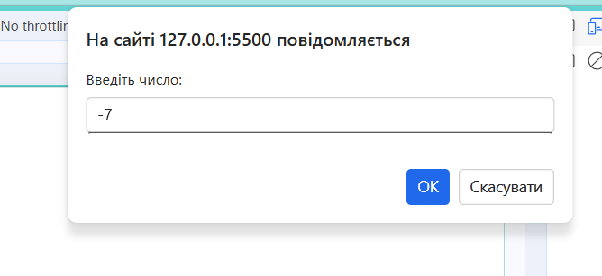
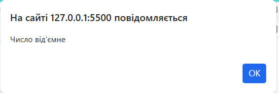
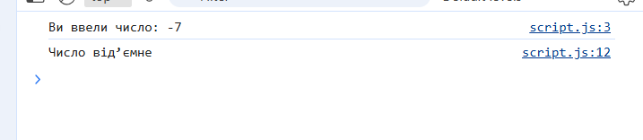
- Посилання на репозиторій: GitHub Repository
- Посилання на сайт: Live Demo
ЗАВДАННЯ №2
Формулювання: Змінна number може
набувати 4 значення: '1', '2', '3' або '4' (запитати це значення у
користувача через prompt()). Якщо вона має значення
'1', то у змінну result запишіть 'зима', якщо має
значення '2' – 'весна', якщо має значення '3' – 'літо', якщо має
значення '4' – 'осінь'. Розв’яжіть завдання через
switch-case. Не забудьте про
дефолтне значення, на випадок, якщо користувач введе щось
інше. Значення змінної result виведіть у Console.
<script>
const number = prompt("Введіть число від 1 до 4:");
let result;
switch (number) {
case "1":
result = "зима";
break;
case "2":
result = "весна";
break;
case "3":
result = "літо";
break;
case "4":
result = "осінь";
break;
default:
result = "Некоректне значення";
}
alert(result);
console.log(`Результат: ${result}`);
</script>
Результати:
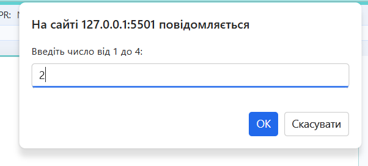
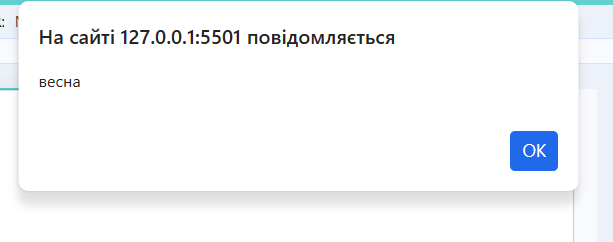
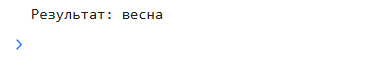
- Посилання на репозиторій: GitHub Repository
- Посилання на сайт: Live Demo
ЗАВДАННЯ №3
Формулювання:
Є Admin та User з відповідними паролями (об’явити та проініціалізувати).
Написати програмний код, який запитуватиме у користувача логін (використати prompt()) і виводить результат у Console браузера, використовуючи шаблонний рядок.
Після цього додати перевірку введеного користувачем значення:
- якщо відвідувач вводить
Admin, тоprompt()запитує пароль. У випадку вдалої ідентифікації вalert()вивести «Hello, Admin»; - якщо нічого не ввели або натиснули Cancel, то вивести в
alert()рядок «Cancelled»; - в іншому випадку вивести в
alert()рядок «I don't know you»; - те ж саме виконати для
User.
<script>
const adminLogin = "Admin";
const adminPassword = "Admin123!";
const userLogin = "User";
const userPassword = "User123!";
const login = prompt("Введіть ваш логін:");
console.log(`Ви ввели логін: ${login}`);
if (login === adminLogin) {
const password = prompt("Введіть пароль для Admin:");
if (password === adminPassword) {
alert("привіт, Admin");
} else if (password === null || password === "") {
alert("Cancelled");
} else {
alert("Невірний пароль для Admin");
}
} else if (login === userLogin) {
const password = prompt("Введіть пароль для User:");
if (password === userPassword) {
alert("привіт, User");
} else if (password === null || password === "") {
alert("Cancelled");
} else {
alert("Невірний пароль для User");
}
} else if (login === null || login === "") {
alert("Cancelled");
} else {
alert("Невідомий користувач");
}
</script>
Результати:
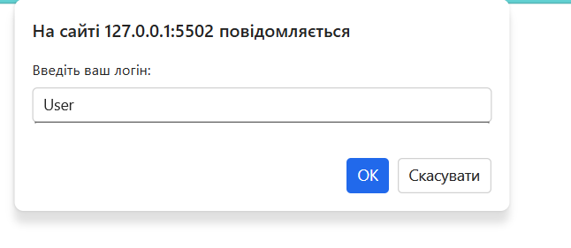
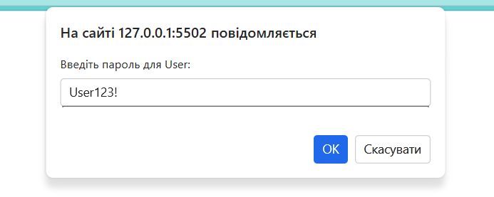
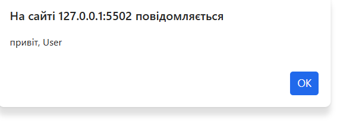
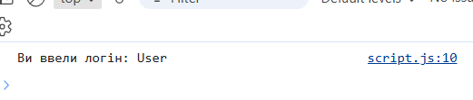
- Посилання на репозиторій: GitHub Repository
- Посилання на сайт: Live Demo
ЗАВДАННЯ №4
Формулювання:
Станція з продажу ремонтних дроїдів.
Оголоси функцію makeTransaction, яка очікує два параметри, значення яких будуть задаватися під час її виклику:
• quantity — перший параметр, число, що містить кількість замовлених дроїдів
• pricePerDroid — другий параметр, число, що містить вартість одного дроїда.
Напиши код функції так, щоб вона повертала рядок з повідомленням про покупку ремонтних дроїдів:
"You ordered <quantity> droids worth <totalPrice> credits!", де:
• <quantity> — це кількість замовлених дроїдів
• <totalPrice> — це загальна вартість замовлення, тобто вартість усіх замовлених дроїдів.
<script>
function makeTransaction(quantity, pricePerDroid) {
const totalPrice = quantity * pricePerDroid;
return `You ordered ${quantity} droids worth ${totalPrice} credits!`;
}
console.log(makeTransaction(5, 3000));
console.log(makeTransaction(3, 1000));
console.log(makeTransaction(10, 500));
</script>
>
Результати:
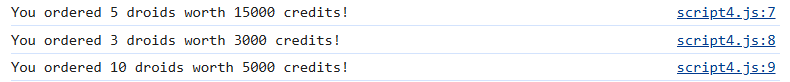
- Посилання на репозиторій: GitHub Repository
- Посилання на сайт: Live Demo
ЗАВДАННЯ №5
Формулювання:
Функція checkForSpam(message) приймає рядок (параметр message), перевіряє його на вміст заборонених слів spam і sale, і повертає результат перевірки.
Слова в рядку параметра message можуть бути в довільному регістрі, наприклад SPAM або sAlE.
Доповни код функції таким чином, що:
- Якщо знайдено заборонене слово (
spamабоsale), то функція повертає бульtrue. - Якщо в рядку відсутні заборонені слова, функція повертає буль
false.
<script>
function checkForSpam(message) {
const normalized = message.toLowerCase();
return normalized.includes("spam") || normalized.includes("sale");
}
// Тести
console.log(checkForSpam("Latest technology news")); // false
console.log(checkForSpam("JavaScript weekly newsletter")); // false
console.log(checkForSpam("Get best sale offers now!")); // true
console.log(checkForSpam("Amazing SalE, only tonight!")); // true
console.log(checkForSpam("[SPAM] How to earn fast money?")); // true
</script>
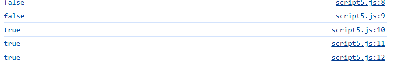
- Посилання на репозиторій: GitHub Repository
- Посилання на сайт: Live Demo
ЗАВДАННЯ №6
Формулювання:
Напиши функцію filterArray(numbers, va5lue), яка приймає масив чисел (numbers) та значення (value) як параметри.
Функція повинна повертати новий масив лише тих чисел із масиву numbers, які більші за значення value.
Усередині функції:
- Створи порожній масив, у який будеш додавати підходящі числа.
- Використай цикл для ітерації кожного елемента масиву
numbers. - Використовуй умовний оператор
ifусередині циклу для перевірки кожного елемента і додавання до свого масиву. - Поверни свій новий масив з підходящими числами як результат.
<script>
function filterArray(numbers, value) {
const filteredNumbers = [];
for (const number of numbers) {
if (number > value) {
filteredNumbers.push(number);
}
}
return filteredNumbers;
}
// тести
console.log(filterArray([1, 2, 3, 4, 5], 3)); // [4, 5]
console.log(filterArray([1, 2, 3, 4, 5], 4)); // [5]
console.log(filterArray([1, 2, 3, 4, 5], 5)); // []
console.log(filterArray([12, 24, 8, 41, 76], 38)); // [41, 76]
console.log(filterArray([12, 24, 8, 41, 76], 20)); // [24, 41, 76]
</script>
Результати:
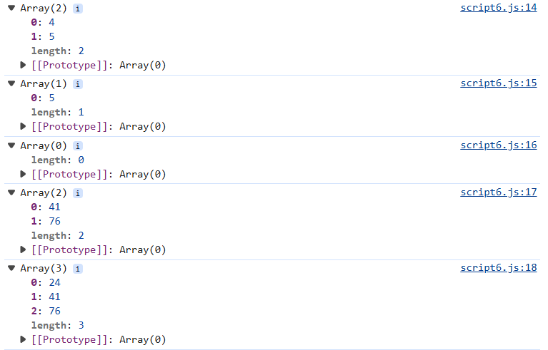
- Посилання на репозиторій: GitHub Repository
- Посилання на сайт: Live Demo
ЗАВДАННЯ №7
Формулювання:
1. Заданий масив цілих чисел. Побудувати новий масив, в якому спочатку стоять числа, що діляться на 2, потім ті, що діляться на 2 та 3, потім на 3.
Надрукувати вхідний та вихідний масиви. Застосувати функції.
2. Упорядкувати масив у порядку зростання (метод швидкого сортування).
Надрукувати вхідний та вихідний масив. Застосувати функції.
<script>
function buildArray(numbers) {
const divisibleBy2 = [];
const divisibleBy2And3 = [];
const divisibleBy3 = [];
for (const num of numbers) {
if (num % 2 === 0 && num % 3 === 0) {
divisibleBy2And3.push(num);
} else if (num % 2 === 0) {
divisibleBy2.push(num);
} else if (num % 3 === 0) {
divisibleBy3.push(num);
}
}
return divisibleBy2.concat(divisibleBy2And3).concat(divisibleBy3);
}
// тести
const inputArray = [2, 3, 4, 6, 9, 12, 15, 18, 20];
const outputArray = buildArray(inputArray);
console.log("Вхідний масив:", inputArray);
console.log("Вихідний масив:", outputArray);
// Швидке сортування
function quickSort(arr) {
if (arr.length <= 1) {
return arr;
}
const pivot = arr[arr.length - 1];
const left = [];
const right = [];
for (let i = 0; i < arr.length - 1; i++) {
if (arr[i] < pivot) {
left.push(arr[i]);
} else {
right.push(arr[i]);
}
}
return [...quickSort(left), pivot, ...quickSort(right)];
}
const sortedArray = quickSort([...inputArray]);
console.log("Вихідний масив (сортування):", sortedArray);
</script>
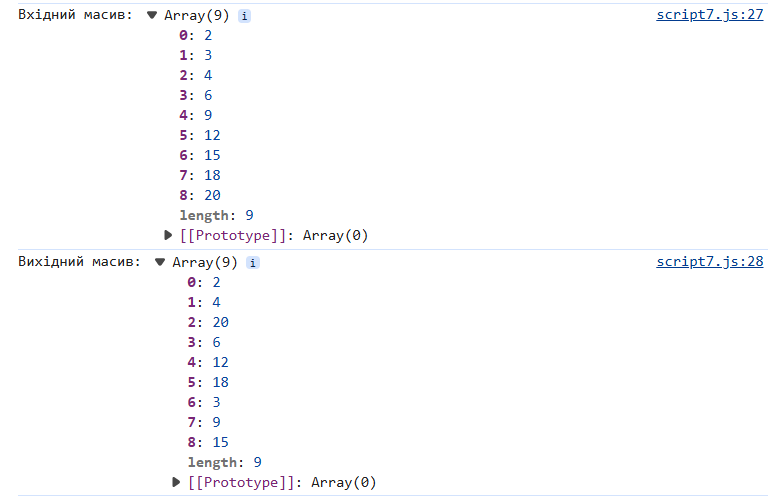
- Посилання на репозиторій: GitHub Repository
- Посилання на сайт: Live Demo
ЗАВДАННЯ №8
Формулювання:
Є двовимірний масив додатніх і від’ємних чисел (об’явити та проініціалізувати генератором випадкових чисел).
Вивести його у Console браузера.
Створити два масива: масив додатніх чисел і масив від’ємних чисел.
Третій елемент у додатньому масиві замінити на від’ємне значення, яке буде введено за допомогою prompt().
Вивести оновлені масиви у Console браузера.
<script>
const rows = 2;
const cols = 5;
const matrix = [];
// Генерація випадкових чисел від -10 до 10
for (let i = 0; i < rows; i++) {
const row = [];
for (let j = 0; j < cols; j++) {
const randomNum = Math.floor(Math.random() * 21) - 10;
row.push(randomNum);
}
matrix.push(row);
}
console.log("Двовимірний масив 2×5:", matrix);
const positives = [];
const negatives = [];
for (const row of matrix) {
const posRow = [];
const negRow = [];
for (const num of row) {
if (num > 0) {
posRow.push(num);
} else if (num < 0) {
negRow.push(num);
}
}
positives.push(posRow);
negatives.push(negRow);
}
console.log("Двовимірний масив додатніх чисел:", positives);
console.log("Двовимірний масив від’ємних чисел:", negatives);
// Заміна третього елемента у першому рядку додатніх чисел
if (positives[0].length >= 3) {
const newNegative = Number(prompt("Введіть від’ємне число:"));
positives[0][2] = newNegative;
}
console.log("Оновлений масив додатніх чисел:", positives);
</script>
Результати:
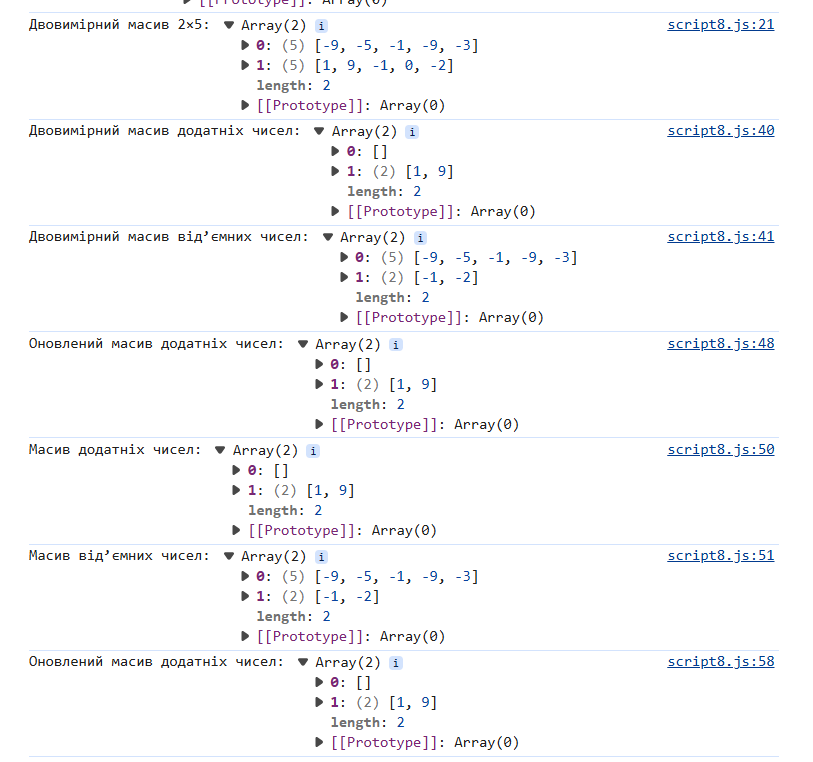
- Посилання на репозиторій: GitHub Repository
- Посилання на сайт: Live Demo
ЗАВДАННЯ №9
Формулювання: Візуальний елемент «Підказка при введенні». Надати можливість виведення підказки при наборі тексту у елемент уведення «текстове поле». Передбачити можливість створення списку слів‑підказок.
ЗАВДАННЯ №9
Формулювання: Візуальний елемент «Підказка при введенні». Надати можливість виведення підказки при наборі тексту у елемент уведення «текстове поле». Передбачити можливість створення списку слів‑підказок.
Програмний код:
<!DOCTYPE html>
<html lang="uk">
<head>
<meta charset="UTF-8">
<title>Підказка при введенні</title>
<style>
#suggestions div {
padding: 3px;
cursor: pointer;
}
#suggestions div:hover {
background-color: #e0e0e0;
}
</style>
</head>
<body>
<h3>Введіть слово:</h3>
<input type="text" id="inputField" autocomplete="off">
<div id="suggestions"></div>
<script>
const hints = ["Київ", "Львів", "Одеса", "Харків", "Дніпро"];
const inputField = document.getElementById("inputField");
const suggestionsBox = document.getElementById("suggestions");
inputField.addEventListener("input", function () {
const text = inputField.value.toLowerCase();
suggestionsBox.innerHTML = "";
if (text) {
const results = hints.filter((h) => h.toLowerCase().includes(text));
for (let word of results) {
const div = document.createElement("div");
div.textContent = word;
div.onclick = function () {
inputField.value = word;
suggestionsBox.innerHTML = "";
};
suggestionsBox.appendChild(div);
}
}
});
</script>
</body>
</html>
Результати:
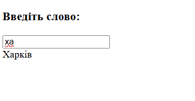
- Посилання на репозиторій: GitHub Repository
- Посилання на сайт: Live Demo
ВИСНОВКИ
У ході виконання лабораторної роботи №4 було розглянуто та реалізовано низку практичних завдань з використанням мови програмування JavaScript. Кожне завдання мало на меті закріплення навичок роботи з базовими конструкціями та функціями:
- Використання
prompt(),alert()таconsole.log()для взаємодії з користувачем. - Застосування умовних операторів
if...elseтаswitch-caseдля перевірки введених даних. - Робота з функціями: створення та виклик, передача параметрів, повернення результатів.
- Обробка рядків та перевірка їх вмісту за допомогою методів
toLowerCase()таincludes(). - Робота з масивами: створення, фільтрація, сортування, побудова нових масивів на основі умов.
- Реалізація алгоритму швидкого сортування для впорядкування даних.
- Створення двовимірних масивів та їх обробка, розділення на додатні та від’ємні числа.
- Розробка інтерактивного елемента «Підказка при введенні» для текстового поля.
Виконання завдань дозволило закріпити знання з основ програмування на JavaScript, навчитися застосовувати умовні оператори, цикли, функції та методи роботи з масивами. Окремо було розглянуто створення простих алгоритмів сортування та інтерактивних елементів інтерфейсу. Таким чином, лабораторна робота сприяла формуванню практичних навичок програмування та підготовці до більш складних завдань.